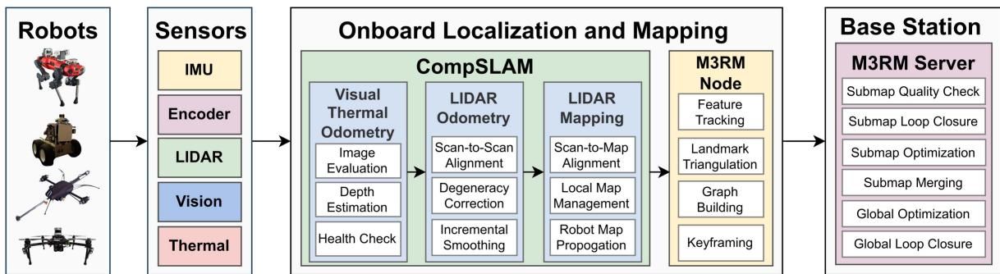
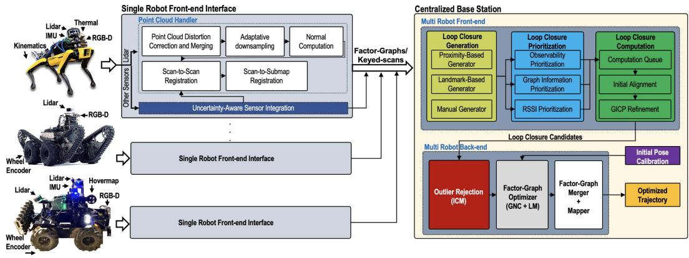
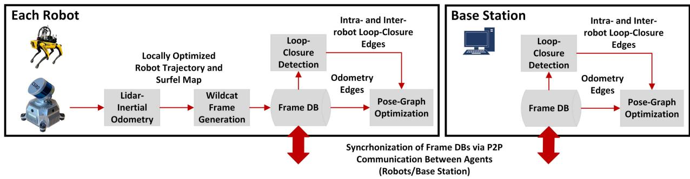
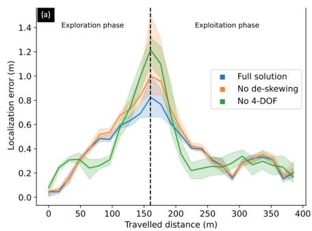
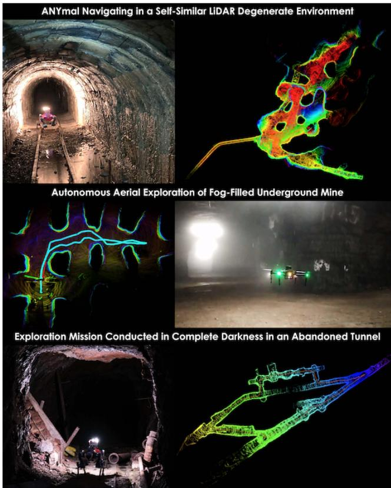

阶段 A · 建立坐标系 / Lesson 0009
DARPA 地下挑战赛：真实世界给 SLAM 泼的冷水
读这篇论文前，你可能以为"SLAM 在小场景里跑得不错 = 真能用了"。这篇由 SubT 挑战赛六支顶尖队伍共同写下的综述，会告诉你：指标好看，不等于能在洞里跑；而真正压垮系统的，往往是论文里从不写、现场才暴露的"脏细节"。
🎯 主题：极端地下环境的 SLAM 现状、架构与开放问题
👥 作者：K. Ebadi, L. Bernreiter, L. Carlone 等（JPL / ETH / MIT / CSIRO / CTU 等）
📅 2024 · Present and Future of SLAM in Extreme Environments: The DARPA SubT Challenge
本节目标 搞清楚 SubT 挑战赛怎么比、比什么，以及为什么它的结果比实验室数字更有说服力。
和前面课程怎么接 前面我们学过激光 SLAM、视觉 SLAM 的算法谱系。这一节把它们放进"真实洞窟、没有 GPS、多机器人"的硬场景里，看理论如何在工程现实面前打折。
1. SubT 到底是什么竞赛
SLAM（同时定位与建图）已经研究了 30 多年，是个相当成熟的领域。但大多数"成熟"的证据来自实验室、城市街道或室内。这篇论文聚焦的是更狠的场景——地下极端环境 ：隧道、洞穴、人造地下结构，乃至火星熔岩管。支撑这些研究的关键推手，是 DARPA 的 Subterranean Challenge（SubT，地下挑战赛） ，一个持续三年、2021 年结束的全球机器人竞赛。
比赛的设定非常"反优雅"：
赛道分阶段 ：先有 Tunnel（隧道） 、Urban（城市地下，如地铁） 两个分站赛，最后是所有环境混合的 Finals（决赛） 。还有一条 virtual track（仿真赛道），但本文只看 systems track（真实机器人赛道）。任务 ：派一队机器人去探索大规模、未知的地下网络（洞穴 / 隧道 / 地铁），发现并报告"工件"（artifact） ——幸存者、手机、灭火器等物体——且报告位置误差要控制在 5 米以内 。约束 ：网络在地下支离破碎，环境动辄从几百米延伸到几公里；机器人必须在 1 小时以内 完成探索；虽然有一个人类操作员监督，但节奏太快、通信太差，逼着各队做出"极少人工干预"的高度自主方案。
换句话说，这不是"比谁地图漂亮"，而是"比谁能在 GPS 拒止、自己也没先验地图的黑暗洞窟里，还能把定位误差压在 5 米内、还能按时回来"。各队成绩用 DARPA 人工测绘的真值地图 来打分——这一点很关键：下文所有"精度数字"都来之不易，是用真实真值对出来的，不是自己跟自己比。
助教提醒：OCR 修正 原文第 I 节标题被识别成 "Technical Challengesfor Underground SLAM"，中间少了空格；正文里 "presence ofobscurants"（遮挡物的存在）也漏了空格，"hundreds ofmeters" 应为 "hundreds of meters"。这些是我读原文时顺手修正的，含义不受影响，但提醒你：PDF 转 Markdown 时单词粘连是高频错误。
2. 集中式 vs 分布式：两种架构哲学
论文把六支队伍（CERBERUS、CoSTAR、CSIRO、CTU-CRAS-Norlab、Explorer、MARBLE）的 SLAM 架构拆开看，最显眼的分歧是多机器人系统怎么组织 。先补两个术语：SLAM 通常分 前端 （把原始传感器数据压成里程计、回环边、路标等中间表示）和 后端 （用因子图 / 位姿图优化，融合中间表示，算出轨迹和地图）。多机器人架构则分三类：
集中式（Centralized） 基站收齐所有机器人的数据，统一做全队最优估计。每台机器人通常只跑本地前端，减轻通信与基站算力。代表：CERBERUS、CoSTAR。
去中心化（Decentralized） 每台机器人既独立估计自己的轨迹与地图，又只和邻居交换部分信息（帧、子图），各自独立优化全队地图。代表：CSIRO、Explorer、MARBLE、CTU。
注意一个事实：六支队伍里没有一支采用真正的"分布式"（Distributed） 架构——即每台机器人只和邻居交换、靠分布式协议联合优化的那种。论文说分布式仍是活跃研究方向，但 SubT 规则要求数据最终要回到基站做可视化与评分，所以它不太适配。

原图注（Fig. 1）： Team CERBERUS 的 SLAM 架构总览。每台机器人估计并维护自己的独立地图；这些地图定期被发往基站的 mapping server，做累积与全局多机器人优化。怎么看这张图： 这是典型的集中式 思路——机器人端只跑 CompSLAM 做"各自估计"，重活（多机器人回环、全局因子图优化）都交给基站的 M3RM 服务器。注意箭头是"定期上传"，意味着一旦断联，机器人就先各自为战。

原图注（Fig. 2）： Team CoSTAR 的 SLAM 架构（LAMP）总览。每台机器人跑本地前端并与基站通信；基站跑多机器人前端（负责回环检测）与后端（负责位姿图优化）。怎么看这张图： 同样是集中式，但比 CERBERUS 更强调"回环在基站"。机器人端 LOCUS 出里程计和点云，基站的多机器人前端专门做机间回环检测 ，后端用 GTSAM 做联合位姿图优化。好处是全局一致；坏处是基站一旦成为瓶颈，全队都受限（见第 6 节的 Dirty Details）。

原图注（Fig. 3）： CSIRO 在 SubT 中的去中心化多机器人 SLAM 系统总览。每台机器人独立运行自己的 Wildcat LIDAR-inertial 里程计，生成的局部优化里程计估计与 surfel 子图被用来产生 Wildcat 帧；这些帧存进数据库，并与其他机器人和基站共享；机器人与基站再用各自收集的帧独立构建并优化位姿图。怎么看这张图： 这是去中心化 的标杆。关键差别：没有"中央大脑"。每台机器人都跑一样的 Wildcat 模块，通过 Mule 点对点系统交换"帧"，各自独立重建并优化整队的位姿图 。断联时只是"暂时不一致"，重逢（rendezvous）后自然收敛——这种"各自算一遍"的冗余，正是它鲁棒的来源。
助教提醒：OCR 修正 原文中队伍名多次被识别成 "CER-BERUS"（中间多了一个连字符），我统一改回 CERBERUS 。另外第 III-D 节 "offhorizontally" 应为 "off horizontally"（CatPack 的激光雷达以 45° 偏离水平安装）。这些是单词粘连 / 误插符号的典型错误。
3. "指标好看 ≠ 能跑"：漂移的真相
这是全篇最值得贴进笔记本的一句话。论文第 IV 节先给出好消息：现代以激光雷达为中心的里程计，在艰难地下环境里也能做到 0.1%–0.5% 的漂移率 （即每走 100 米只偏 0.1–0.5 米）。然后话锋一转——
0.5% 漂移率 × 1000 m 行进距离 = 约 5 m 的定位误差
论文原文（IV-B 节）原话是："With a 0.5% odometry drift, a robot would have a 5-m error after a 1-km traverse." 也就是说，即便你"只有"0.5% 的漂移，走满 1 公里，误差就已经顶到了 SubT 的 5 米及格线 。这还只是单程、没有回环纠偏的情况。一旦距离更长（Explorer 单次测试动辄超过 1 km），误差会继续累积。
这就是为什么回环检测（loop closure） 不是锦上添花，而是命门：它把"一直涨"的误差重新"扣"回来。论文举了 MARBLE 的极端例子——2.2 km 轨迹、回环后起点终点只差 0.31 m，相当于 0.014% 的误差，比单纯里程计的 0.5% 低了一个数量级。下面这张图把"预处理（去畸变 + 用 IMU 约束俯仰横滚）能省多少误差"直接画了出来。

原图注（Fig. 10）： 定位误差随行进距离的变化。实线是中位误差，彩色区域是第一与第三误差四分位；虚线分隔"探索新区域"阶段与"返回已访问区域"阶段；统计基于 10 次实验。怎么看这张图： ① 左半段（虚线前）是"向外探索"，误差随距离单调上升——这就是第 3 节说的漂移在累积；② 右半段"往回走"时误差反而下降，因为重新看到旧地方、靠扫描到地图匹配把漂移拉回；③ 不同曲线对比说明"去畸变（deskew）+ 用 IMU 锁住 roll/pitch"能明显压低误差。一句话：没有回环 / 重访，误差只增不减 。
互动判断
某论文说"我们的激光里程计只有 0.5% 漂移，已经够用了"。结合上面 1 km → 5 m 的论证，你怎么看？
对，0.5% 已经非常小，可以直接部署
错，还要看距离、回环与任务要求
漂移率跟距离无关，永远只是 0.5 m
4. 地下世界到底难在哪
地下环境之所以是 SLAM 的"地狱难度"，不是单一因素，而是叠加：没有 GPS、常常没有先验地图；光照极差让视觉 / 视觉-惯性 SLAM 难以施展；烟尘、雾、烟雾会污染激光雷达；粗糙地形上的剧烈 6 自由度运动给 IMU 灌入高频噪声；长走廊、大空场"没特征"会让激光里程计退化；自相似区域又会让回环检测误报 。论文用一张图把三类典型"杀手场景"摆在一起：

原图注（Fig. 9）： （上）自相似环境使仅靠 LIDAR 的定位不可靠；（中）充雾环境中用 CompSLAM 结合热成像做空中探索；（下）黑暗且受泥水坑反射影响的隧道。怎么看这张图： 三张小图分别对应三种不同失败模式——① 上：长相都一样的通道，让几何找不到"我在哪"的依据；② 中：雾让激光失效，被迫切换到热成像这种"能穿透遮挡"的模态；③ 下：黑暗 + 地面水坑反光，把激光点云搅乱。结论是：没有一种传感器能单挑，必须多模态冗余（激光 + 视觉 + 热成像 + IMU + 轮速） 。
论文还点出算法层面的两个"坑"：一是感知混叠（perceptual aliasing） ——不同地方看起来一样，导致假回环；二是参数随场景漂移 ——一个小隧道突然接一个大洞穴，原本调好的参数就失灵了（这正是第 6 节 Dirty Details 的主角）。
5. "问题已解决"——被五重限定的结论
论文第 V 节开头，作者先抛出一个看似乐观、实则处处设防的判断。原文（V 节首段）写道：
原文核心句 "Looking across the six solutions … there is a reason to believe that the underground SLAM problem, with high-quality multimodal sensing suites, is a solved problem. Yet only solved with sufficient qualifications of the environment, the scale, the sensors, the parameter tuning, and the computation power."
翻译过来："综合六支方案看，在『高质量多模态传感器套件』条件下，地下 SLAM 问题可以说已经解决了 。但——这个『已解决』，只对以下五个前提成立："
① 环境（environment） 仅限论文覆盖的那几类地下场景；换成你没测过的地貌，不保证。
② 规模（scale） 小队（5–10 台）可行；上百台、城市级 / 森林级规模，仍需分布式。
③ 传感器（sensors） 必须"高质量多模态套件"：激光 + IMU + 视觉 / 热成像等。单激光或廉价传感器不行。
④ 参数整定（parameter tuning） 性能高度依赖"精心手调"的参数；调好了才行，没调好就崩。
⑤ 算力（computation power） 要有足够的机载算力跑实时优化；算力不够就跑不动。
潜台词 作者直言：在极端地下环境里，[7]（Cadena 等的 SLAM 综述）列出的大部分开放问题依然成立 。"已解决"是有条件的胜利。
这五个限定，正好对应下一节那些"论文里不写、现场才暴露"的细节。请记住这句话的结构：任何"SLAM 已解决"的断言，都要追问它躲在这五个限定里的哪一条后面。
6. Dirty Details：真正杀死系统的细节
这是全文最有价值、也最不像"论文"的一节。作者们罕见地坦白：技术报告里省略的"脏细节"，才是真实系统的分水岭。我把六支队伍在各自 Dirty Details 小节里提到的坑，逐条归并成一张清单（均引自原文）：
参数整定（Parameter Tuning） 几乎每队都中招。CERBERUS 的退化检测依赖"手写、且随机器人不同"的参数，还要用网格搜索跨环境调；CoSTAR 专门攒了 12 个数据集手动调参。Explorer 甚至要写一套实时切换体素大小 的启发式：窄走廊用小体素保细节，大洞穴换大体素省算力。
传感器掉线（Sensor Dropouts） CSIRO 最直白：Wildcat 在测试里偶尔发散，"几乎全都出现在平台遭受剧烈撞击导致的传感器掉线 ，或始于间歇性错误的硬件故障"。换句话说，不是算法错，是传感器被撞懵了。
时间戳（Timestamps） MARBLE 踩的坑很典型：IMU 走的是（基于 ACM 的）USB 驱动，内核不保证优先级，导致生成的时间戳不一致，甚至出现负值 ，IMU 预积分直接算崩。他们的 workaround 是用标称频率"替换"异常时间戳——不精确，但够用。这提醒我们：驱动层的时间同步，是很多人忽略的定时炸弹。
CPU 争用（CPU Cycles） Explorer 把回环搜索半径从大到小一路调到 2 m，原因之一是"回环优化很贵，省下的 CPU 周期 还能顺带避免不同楼层的假回环"。算力不是无限资源，要主动为它做减法。
尘埃（Dust） Explorer 专注无人机，螺旋桨会扬起一圈尘。他们的土办法：若 3 m 外特征够多，就直接忽略 3 m 内的所有点 ——假设尘是绕机器人环形分布，远处还有真特征可解算；若逃不出去，尘会从四面糊死，导致灾难性失败。
协方差 / 回环 / 标定 CERBERUS 的后端协方差是"静态手调"的；它没有机载回环检测 ——机器人一旦长时间脱离基站，误差就攒着，错的单张地图还能"带崩"整个全局图，必须靠人盯着删。CSIRO 则靠生产级标定躲过了后续重标定的麻烦。
助教提醒：OCR 修正 原文 "zerovelocity factors"（零速度因子，用于静止时约束 IMU 偏置）被识别成 "zerovelocity"，少了空格，已修正为 "zero velocity"。这类"术语被连写"在全文多处出现，读的时候要脑补空格。
7. 对做研究的人意味着什么
把上面的五重限定和脏细节清单合起来，论文其实给"想做真实世界 SLAM 的研究者"画了一张体检表 。下次你设计或复现一个 SLAM 系统时，逐项自查：
☐ 环境泛化 我的参数 / 模型，换一种地貌还成立吗？还是只在采集数据集的那条走廊有效？
☐ 规模上限 5 台能跑，50 台、100 台时通信与算力会卡在哪？需要分布式吗？
☐ 传感器冗余 激光被雾糊了，有没有热成像 / 视觉 / IMU 能顶上？单点失效会全崩吗？
☐ 参数健壮性 参数是手调死值，还是能随场景自适应？有没有"体素 / 半径自动切换"这类机制？
☐ 算力预算 在目标机载平台（嵌入式！）上能实时吗？还是只在桌面 GPU 跑过？
☐ 脏细节 时间戳同步、传感器掉线、CPU 争用、尘埃、假回环——我的系统对这些有兜底吗？
互动判断
论文说地下 SLAM"已解决"，条件是高质量多模态传感器 + 充足算力 + 精心调参。下面哪种态度最贴合作者本意？
既然已解决，闭眼照搬现有方案即可
有条件成立，脏细节与泛化仍是真问题
分布式多机优化已被六队验证成熟
课后练习
SubT 的评分要求"工件报告位置误差在 5 m 内"。若某机器人里程计漂移率为 0.3%，它单程最远走多少米就会突破这条线（忽略回环）？展开查看答案 误差 = 漂移率 × 距离。0.3% = 0.003，设 0.003 × d = 5 m，得 d ≈ 1667 m，即约 1.67 km。这正是论文强调"长距离必须靠回环把误差扣回"的原因——单程走到 1.67 km 就及格线告急。
集中式（CERBERUS / CoSTAR）与去中心化（CSIRO）架构，在"机器人长时间脱离基站"时，各自的风险是什么？展开查看答案 集中式：机器人端只跑本地前端，断联期间误差持续累积，且 CERBERUS 没有机载回环检测，回基站后全局图可能要人手动修；CSIRO 的单张错图甚至会"带崩"全队图。去中心化：每台都独立维护并优化全队位姿图，断联只是"暂时不一致"，重逢后自然收敛，韧性更好——但要求每台都有足够算力各自跑优化。
论文 Fig. 10 中"往回走"阶段误差下降，靠的是什么机制？为什么它依赖"重访已探索区域"？展开查看答案 靠的是回环 / 重访时的扫描到地图匹配：机器人再次看到旧地方，把当前位姿和之前子图对齐，从而把累积漂移纠正回来。它必须"重访"才有旧地图可比；纯向外探索、永不回头，就没有这个纠偏机会，误差只增不减。
从 Dirty Details 里挑一条（如时间戳不一致、传感器掉线、尘埃），设想一个你在自己项目里可能遇到的类似"脏细节"，并写一句应对思路。展开查看答案 示例（时间戳）：若两个传感器时钟不同源，可用硬件触发 / PTP 同步，或在驱动层检测异常时间戳并夹紧到标称频率（如 MARBLE 的做法）。要点是：这种问题不在算法论文里，却在现场必然出现，要提前设计兜底而不是事后救火。
论文把"问题已解决"限定在五个前提上。请用你自己的话，给"想在火星熔岩管里部署 SLAM"的研究者列三条必须满足的前提。展开查看答案 参考：① 传感器——需激光 + IMU + 可能的热成像冗余以抗尘埃 / 暗环境；② 算力——火星车机载嵌入式平台能否实时跑优化（不能用桌面 GPU）；③ 参数——无法现场大量人工调参，系统需具备自适应 / 弹性（resilient）重配置能力。规模与环境泛化也需考虑。